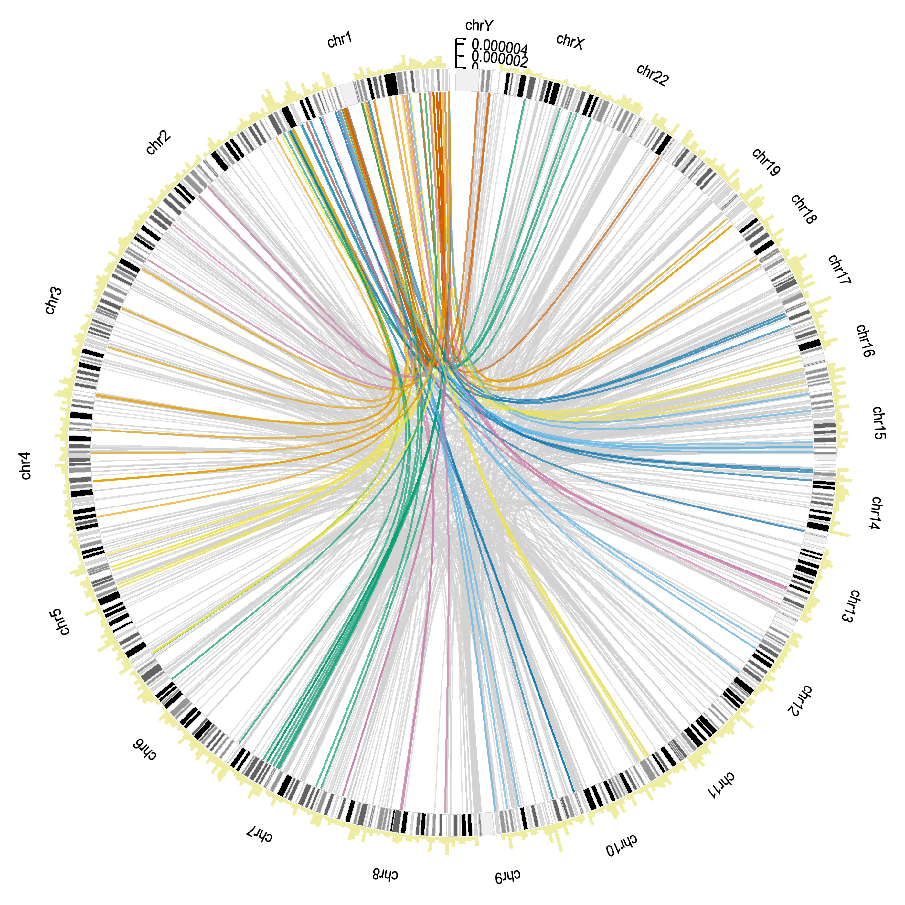
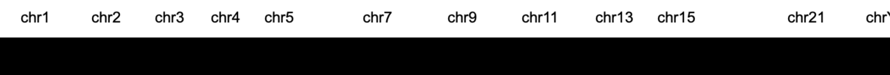
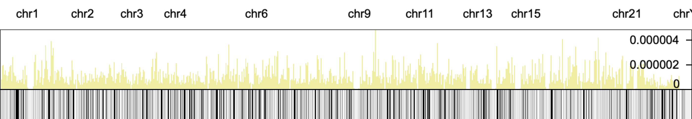
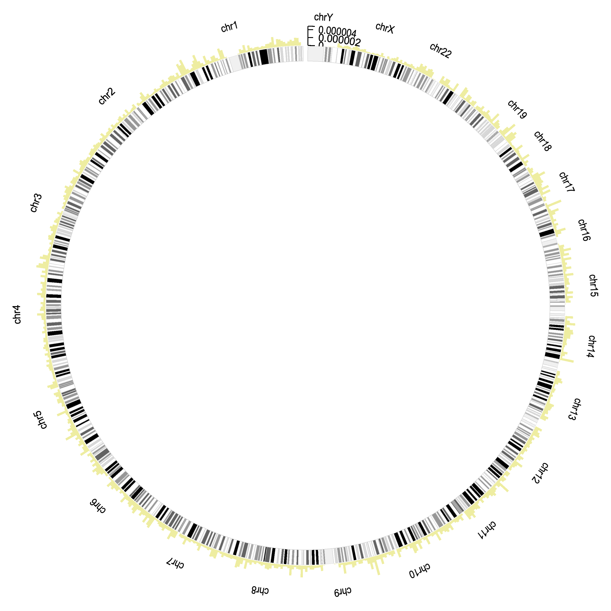
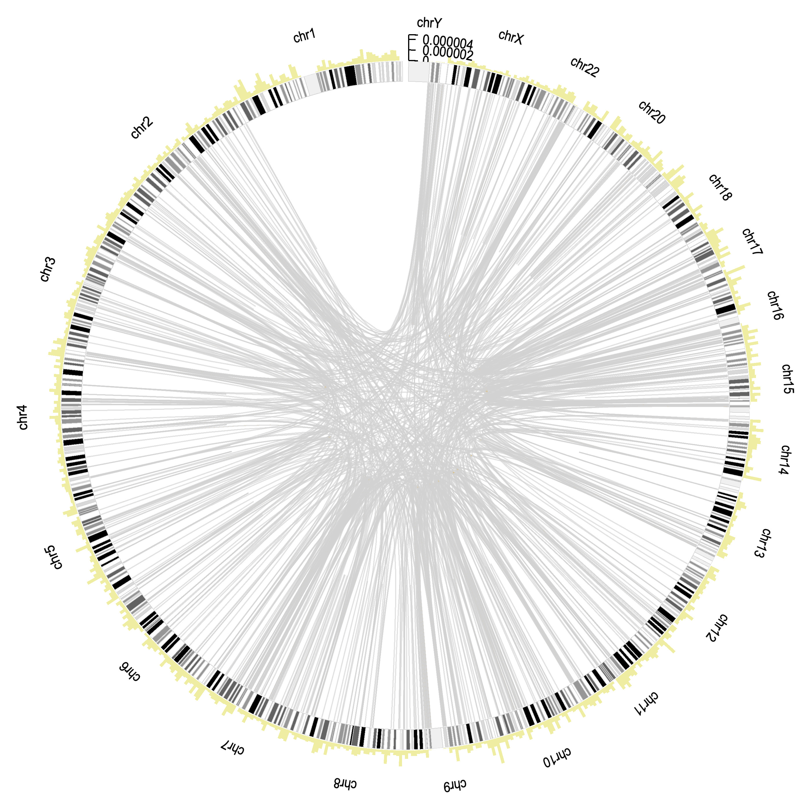

Introducing new chart types
This page is used to study the effectivity of introducing new chart types to a blind individual,
by comparing a direct approach to a gradual approach (starting from a known chart type and explaining the transitions).
Sequence Logo
Data
Here is the data.
Direct introduction
Tasks
- Read the description
- You can read the description a maximum number of three times.
- You can take as much time to take in the data as you want.
- You can not access the description or data after starting to draw.
- Sketch the chart
- Sketch the general appearance of the chart as accurate as possible.
- Focus on the visual elements. The chart does not need to follow the exact data.
- Use colors if possible.
Chart
Description
Imagine a sequence logo plot as a series of vertical bars that are stacked on top of each other, where each bar represents a position in a sequence. Here’s how you can visualize and draw it:
-
Vertical Bars: The chart is made up of vertical bars, each corresponding to a position along the x-axis (labeled from 0 to 9 in your case). These bars represent the data at each position.
-
Stacked Segments: Each bar is divided into colored segments. The segments represent different types of data:
- Green Segment: For the letter A.
- Yellow Segment: For the letter G.
- Blue Segment: For the letter C.
- Red Segment: For the letter T.
The height of each segment in the bar corresponds to the proportion of that letter at that position.
-
Ordering of Segments: Within each bar, the segments are ordered from the highest proportion at the top to the lowest at the bottom. So, if A is the most frequent letter at a position, the green segment will be on top.
-
Bar Height: The total height of each bar represents the sum of all segments (A, G, C, T) at that position, reflecting the total value for that x-coordinate.
-
Information Density: The overall height of the bar reflects the total amount of information at that position, which can vary from position to position.
-
Visual Pattern: As you move from left to right across the x-axis, you'll see variations in the height and color distribution of the segments in the bars, reflecting changes in the data.
In summary, each vertical bar has stacked colored segments that show the frequency of different letters at each position, ordered from most to least frequent. The height of the bar indicates the total value at that position.
Pause here to sketch the chart.
Gradual introduction
We now introduce the sequence logo in three steps. We start with a bar chart, then transition to a stacked bar chart, before introducing the sequence logo.
Base the sketches for these charts solely on the descriptions you hear here, and not on the previous description.
Tasks
For each gradual chart, first read the description, then sketch the chart. The tasks are the same as in the direct approach. They are repeated here.
- Read the description
- You can read the description a maximum number of three times.
- You can take as much time to take in the data as you want.
- You can not access the description or data after starting to draw.
- Sketch the chart
- Sketch the general appearance of the chart as accurate as possible.
- Focus on the visual elements. The chart does not need to follow the exact data.
- Use colors if possible.
Bar Chart
Chart
Description
Imagine a series of vertical bars arranged side by side on a horizontal axis. Each bar represents a different position along the x-axis, from 0 to 9. The height of each bar corresponds to the total value for that position, given by `y_total`.
Visual Elements:
- X-Axis: A horizontal line at the bottom, labeled from 0 to 9.
- Bars: Ten vertical bars, one for each x-value. The height of each bar corresponds to the value of `y_total` for that x-position. Each bar is the same color, black, and its height varies based on the `y_total` value.
Pause here to sketch the chart.
Stacked Bar Chart
Chart
Description
To transform the bar chart into a stacked bar chart, you break each black bar into four segments stacked on top of each other, with each segment representing a different letter: A, G, C, and T. The height of each segment within a bar corresponds to the value of A, G, C, and T, respectively.
Visual Elements:
- Bars: The bars remain vertical and side by side. Each bar is divided into four colored segments:
- Green Segment: Represents A.
- Yellow Segment: Represents G.
- Blue Segment: Represents C.
- Red Segment: Represents T.
- Order: The segments are stacked from bottom to top in the order of A, G, C, and T.
Pause here to sketch the chart.
Sequence Logo
Chart
Description
In a sequence logo plot, each position along the x-axis is depicted as a stack of letters, with the height of each letter representing its frequency. The letters are arranged in order of their predominance, with the most frequent letter at the top.
Visual Elements:
- X-Axis: A horizontal line labeled from 0 to 9.
- Stacks: At each x-position, you have a vertical stack where each letter is represented by a different height:
- Green (A)
- Yellow (G)
- Blue (C)
- Red (T)
- Ordering: The letters are stacked in order of frequency, from most frequent at the top to least frequent at the bottom.
- Height Representation: The total height of the stack at each position is proportional to the `y_total` value, and the relative heights of the letters show their frequency at each position.
Pause here to sketch the chart.
Circos Plot
Data
Since the dataset used to create the Circos plot is large, it is not easily browsed. Therefore, it is omitted.
Direct introduction
Tasks
- Read the description
- You can read the description a maximum number of three times.
- You can take as much time to take in the data as you want.
- You can not access the description or data after starting to draw.
- Sketch the chart
- Sketch the general appearance of the chart as accurate as possible.
- Focus on the visual elements. The chart does not need to follow the exact data.
- Use colors if possible.
Chart

Description
Imagine a circular chart resembling a clock face, called a circos plot. Envision this plot as a ring divided into several sections, each representing a different segment of a genome, like different hours on a clock.
Around the outer edge of this ring, imagine a series of vertical bars forming a bar chart. These bars represent counts of genomic features and vary in height. Some are tall, while others are short, creating a jagged, uneven ring of bars encircling the plot.
Inside this outer ring, within the main circle, there are numerous lines connecting different sections of the ring. These lines come in two types: gray lines and colored lines.
The gray lines are more numerous and connect different segments of the genome, showing relationships between pathway genes. These lines crisscross the interior of the circle, forming a complex web of connections.
In addition to the gray lines, there are also colored lines inside the circle. These lines are fewer but more vivid, representing highly similar genomic regions. They stand out against the gray lines due to their bright colors and also connect different segments of the genome, forming distinct, colorful arcs.
In summary, a circos plot features a ring with a bar chart around the outer edge, while the inside of the ring is filled with a web of gray lines and colorful arcs, illustrating connections and similarities between different genomic regions.
Gradual introduction
Rectangle

Ideogram
Ideogram with barchart

Circular ideogram with barchart

Circos with gray lines

Circos with gray and colored lines